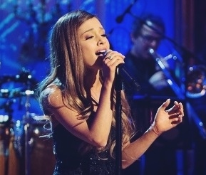
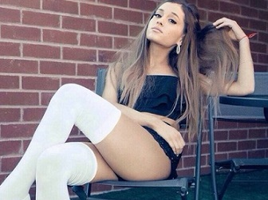
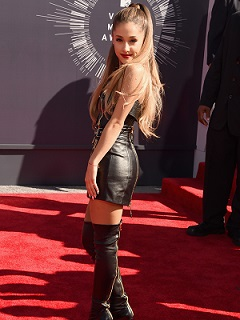
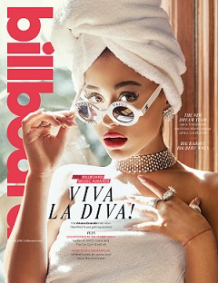
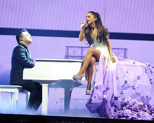

|

|

|

|
2014-2017 My Everything, gira mundial y otros trabajos.
|
|
Para enero de 2014,
Grande estuvo trabajando en su segundo álbum de estudio junto a Ryan Tedder y Benny Blanco.
Poco después ganó los People's Choice Awards luego de ser galardonada «artista revelación
favorito». El 4 de marzo de 2014, el presidente de los Estados unidos Barack Obama
y la primera dama Michelle Obama, invitaron a Grande en la Casa Blanca,
llamado «Women of Soul:
In Performance at the White House», el cual fue diseñado para celebrar lo que la Casa Blanca describe como grandes «antepasadas» de la música americana,
con canciones que exploran luchas y logros de las mujeres.
En 2014, recibió el galardón a la artista revelación del ańo por la Asociación de la Industria musical, debido al éxito de Grande en el 2012. Más tarde
confirmó que había completado su segundo álbum de estudio y reveló mediante twitter el nombre de álbum, titulado My Everything
.
Su segundo álbum de estudio, My Everything, fue publicado el 25 de agosto de 2014 y debutó en la primera posición del Billboard 200
. Con esto, Grande obtuvo
su segundo álbum número uno de manera consecutiva, convirtiéndose en la primera artista mujer desde 2010 en obtener sus dos primeros álbumes de estudio en la
cima de Billboard 200.70 La revista Rolling Stone
crítico positivamente el álbum, y dijo que «My Everything es donde la estrella de Nickelodeon empieza a crecer.
Es una prometedora, inteligente y descarada declaración pop».
|

|
|

|
El primer sencillo del álbum se tituló «Problem»
con la colaboración de la rapera australiana Iggy Azalea
.En su primera semana de lanzamiento, la canción superó ventas de 438 000 descargas y debutó en la tercera posición para luego ubicarse en el segundo lugar en la lista Hot 100
. El éxito de las ventas durante la primera semana de lanzamiento, convirtió a Grande en la mujer más joven con una canción que debuta con más de 400 000 descargas. La canción obtuvo el octavo mejor debut en descargas digitales y el cuarto en general hecho por una mujer en la historia.«Problem» obtuvo un buen rendimiento comercial alcanzando los primeros lugares alrededor del mundo. Recibió múltiples discos de platino por la RIAA
, y recibió certificaciones de ARIA, IFPI, GLF y RMNZ
, entre otros más.En el
Reino Unido
, la canción debutó en la primera posición, y con esto Grande obtuvo su primer número uno en mencionado país. Adicionalmente, logró el récord histórico en la
lista de éxitos del Reino Unido al convertirse en la primera canción en debutar en el número uno del conteo basado por primera vez en su historia en ventas y mediaflujo. Al respecto, Grande y su representante Scooter Braun
agradecieron a los habitantes británicos por el apoyo que recibió la canción.
|
|
El 2 de julio de 2014, «Break Free»
, se convirtió en el sencillo predecesor de «Problem», y contó con la colaboración del pinchadiscos alemán Zedd
. Al igual que anteriores de sus sencillos, la canción ingresó en listas de diversas partes del mundo logrando un buen desempeño internacional. Se ubicó en la cuarta posición en Billboard Hot 100
convirtiéndose rápidamente en un éxito. Grande interpretó la canción en los MTV VMA 2014
y esa misma noche recibió el galardón a mejor video pop por «Problem».
El 29 de julio de 2014, se publicó «Bang Bang»
, una canción que Grande colaboró junto a Nicki Minaj
y Jessie J
. «Bang Bang» se convirtió en el segundo número uno en el Reino Unido para Grande, y alcanzó la tercera posición de la
lista Hot 100
, y además se convirtió en la tercera canción en ingresar al top 10 de manera silmultánea para Grande, pues, «Problem» y «Break Free»
siguieron entre las diez primeras posiciones esa misma semana. Con esto, Grande se convierte junto a la británica Adele
en las primeras y únicas mujeres en lograr tres canciones como artistas principales dentro del top 10 simultáneamente.
|

|
|

|
En la lista Digital Songs
Grande lograría otro récord más cuando «Best Mistake»
, un sencillo promocional de My Everything
, debutó en la sexta posición del conteo haciéndole compañía a «Break Free» y «Bang Bang», acaparando las seis primeras posiciones del conteo. Esto le permitió a Grande convertirse en la primera artista femenina en la historia en obtener tres canciones de manera simultánea entre las seis primeras posiciones de la lista Digital Songs, y la segunda artista en general. Así, Grande rompió en el 2014 el récord impuesto por Michael Jackson
en el 2009. Más tarde, publicó «Love Me Harder»
y «One Last Time»
, los cuales alcanzaron la séptima y decimotercera posición en el conteo Hot 100
, respectivamente. Ambas canciones, al igual que las anteriores, tuvieron un buen rendimiento comercial alrededor del mundo.
Luego de la publicación de «Love Me Harder», Grande se convirtió en la artista con más canciones top 10 en la Hot 100 durante el 2014.
El 21 de agosto de 2014, Grande logró ubicarse en el primer lugar de la lista Billboard Artist 100
, que está dedicado a medir la actividad de los artistas en las listas más influyentes de Billboard, para así posicionarlos por su popularidad
y éxito obtenido. Grande se convirtió en la primera mujer en conseguir el primer lugar en mencionada lista.
|
|
Poco después, anunció su primera gira mundial The Honeymoon Tour
.
Más tarde, se presentó en los
MTV Europe Music Awards 2014
en donde abrió la ceremonia de premios interpretando sus éxitos «Problem» y «Break Free», y obtuvo el
galardón a la mejor artista femenina, además de obtener el galardón a la mejor canción por «Problem». Asimismo, se presentó en los Bambi Awards de 2014
, en
Alemania
. Esa noche recibió el galardón a la mejor artista nuevo. El jurado de los Bambi Awards dijo lo siguiente
al respecto:
«Ariana Grande es una joven cantante con una poderosa voz que sabe cómo combinar el pop, soul, hip-hop y la música electrónica para formar un sonido
de baile irresistible. Sus éxitos establecieron nuevos récords en iTunes, sus conciertos agotan boletos y tiene millones de seguidores en Facebook, Twitter e Instagram.
Su inconfundible voz e inusual rango que puede extenderse hasta cinco octavas hacen de ella un talento excepcional de nuestro tiempo».
|

|
|